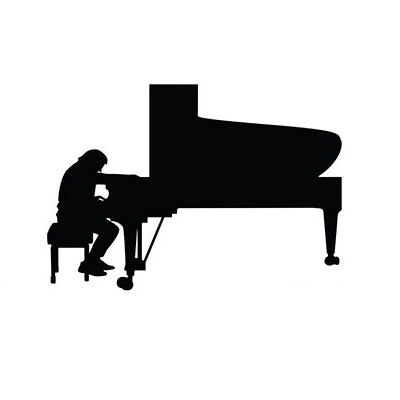
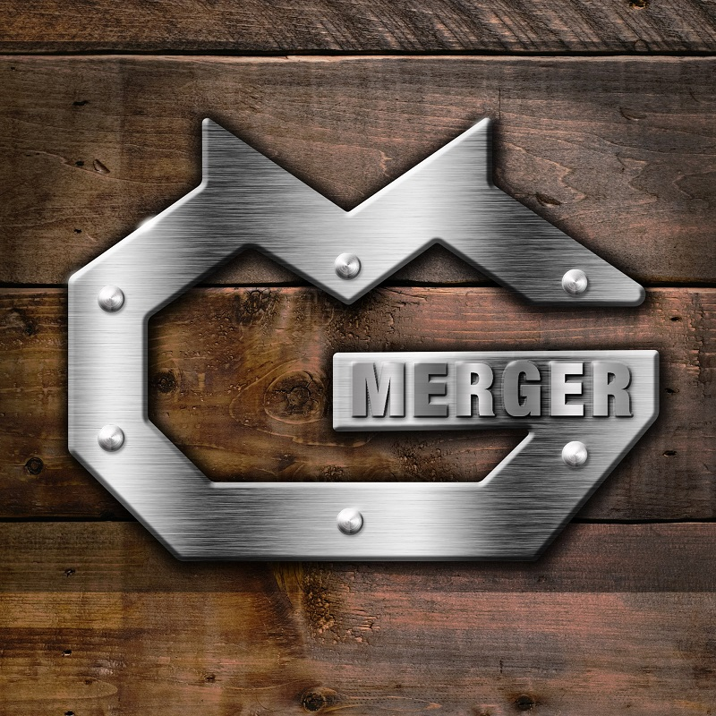
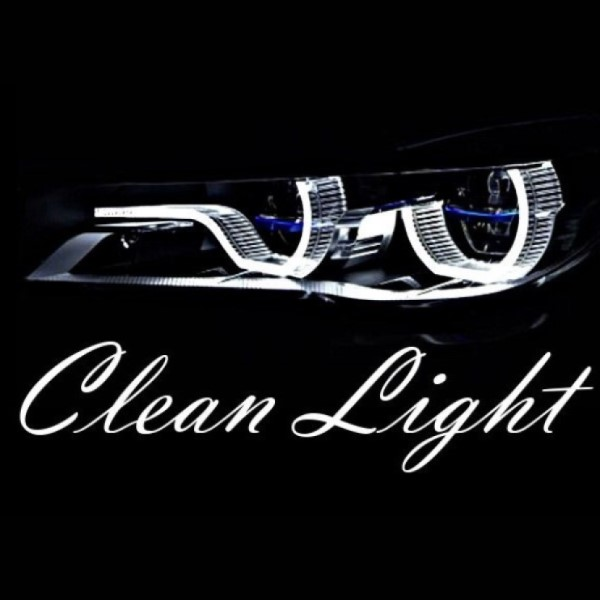
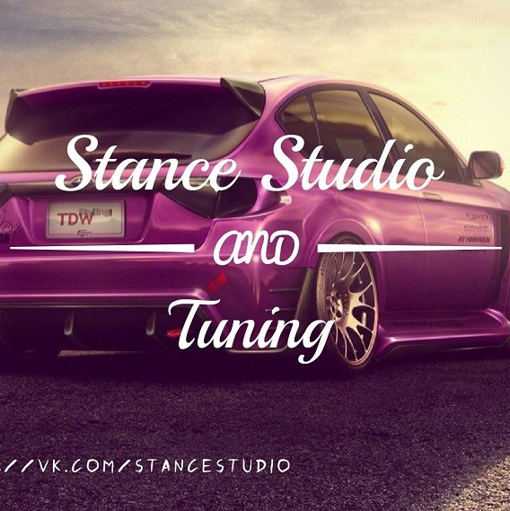
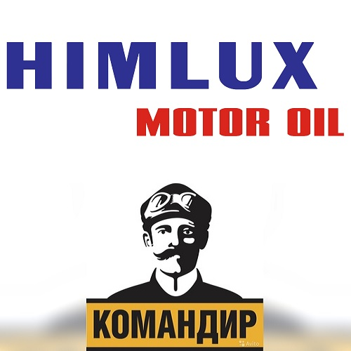
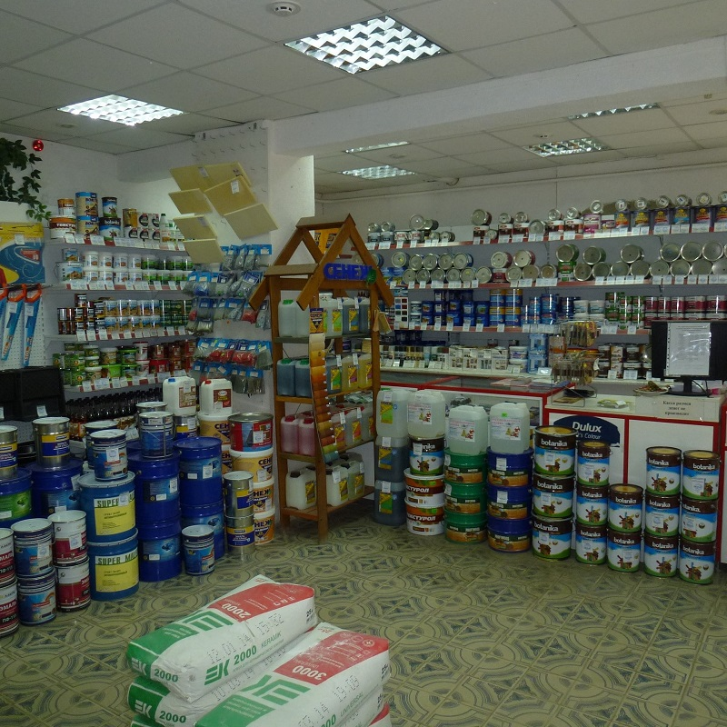

 С 2020 года работаю в фортепианной мастерской "Мастерская Виктора Головченко". В обязанности входит: разбор пианино и роялей, полировка деталей, подбор запчастей и крепежа, зареивание деки, перебивка строя, цвиковка, регулировка механики, столярные работы, сборка инструментов.
 В 2019 году с другом организовали мастерскую "Merger" дизайнерской мебели и торгового оборудования. Мои обязанности: расчет металлоконструкций; слесарные, сварочные и покрасочные работы; расчет, прокладка и установка электропроводки; конечная сборка проекта.
С июля 2018 до конца 2019 года работал на заводе "Мовен-НН". Завод занимается разработкой систем вентиляции и кондиционирования для кораблей и подлодок. В обязанности входило: чтение чертежей, подбор комплектующих, сборка систем, разработка оснастки; слесарные работы, столярные работы, такелажные работы, малярные работы; дуговая сварка, сварка полуавтоматом, аргонная сварка; работа на листогибочном станке, токарном станке, гильотинном станке, трубогибочном станке, прокатном станке, радиально-сверлильном станке, пескоструйном аппарате. За время работы прошел обучение на стропальщика, сварщика, оператора станков с ЧПУ.
 В 2017 году с другом организовали мастерскую "Clean Light"по ремонту автомобильной оптики. Занимаюсь этой деятельностью по сей день, в свободное время и по желанию. Ремонт корпусов и проводки фар, полировка стекол фар, регулировка фар, подбор, установка и замена линз, ходовых огней, противотуманных фонарей, ксенона.
 В 2016 году подрабатывал в автомастерской "Stance Studio". В обязанности входило: полировка автомобилей, шумоизоляция, установка акустических систем и камер, ремонт тормозной системы, ремонт и замена проводки, компьютерная диагностика автомобилей.
 В 2015-2017гг работал в магазине "Химлюкс" продавцом-консультантом по подбору автозапчастей для грузовых автомобилей. В 17-18 - в автомагазине "Командир". В обязанности входило ведение учета в 1С, подбор запчастей по электронным каталогам, заказ товара у поставщиков, доставка и установка запчастей.
 В 2013-2015гг работал на себя. Был небольшой магазин строительных материалов. Открывал ИП и ООО, на ИП документацию вел сам. Получил много опыта общения с ПФР, ФНС, ФСС. К сожалению, в конце 14 года доллар подорожал в 2 раза, и население переключилось на скупку техники и удовлетворение первичных потребностей.